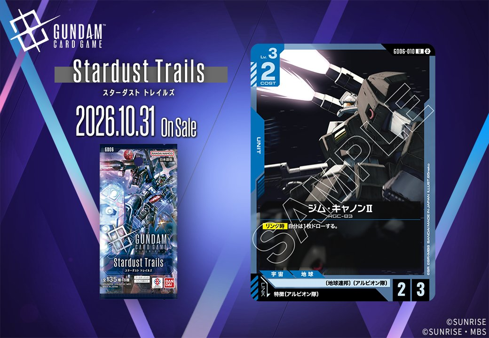
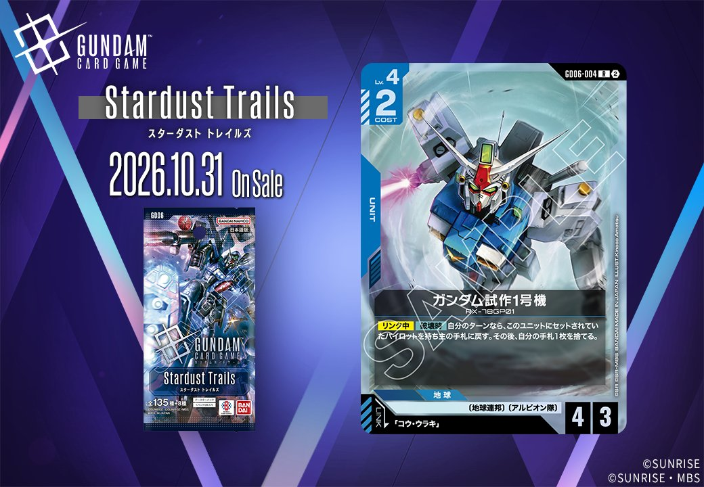
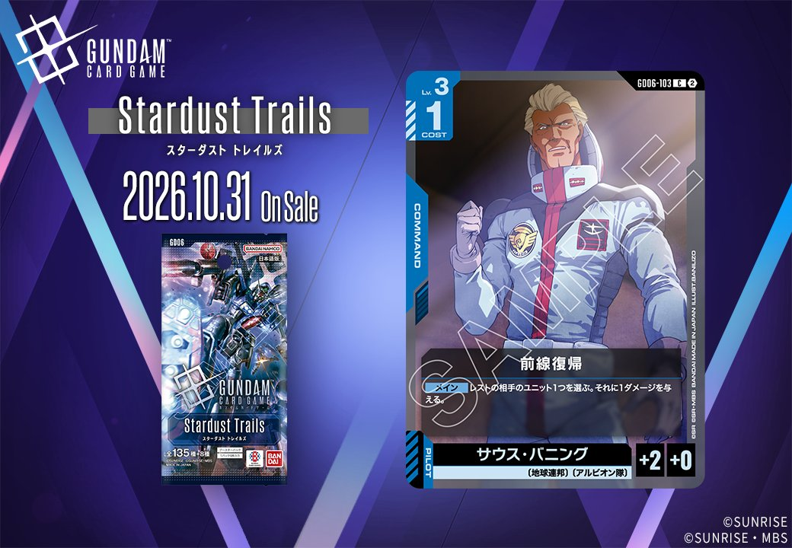
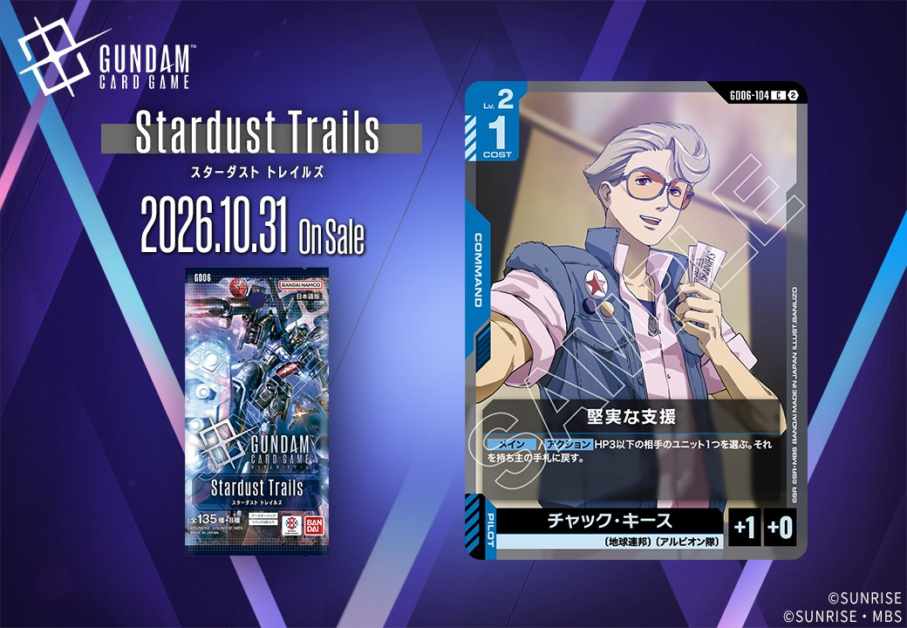
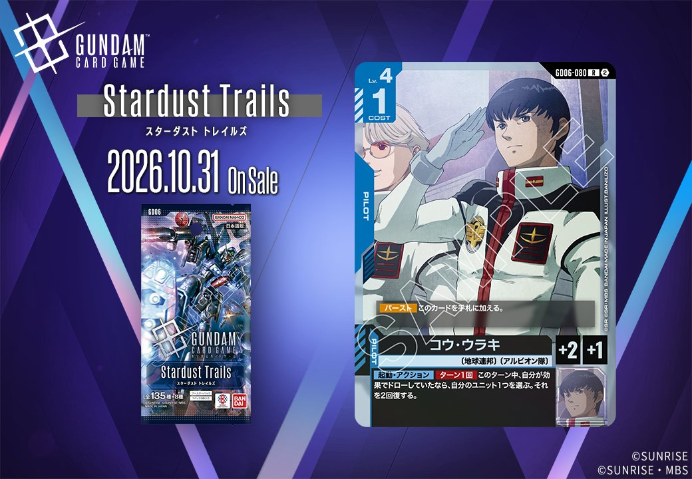

2026年10月31日発売のGD06（Stardust Trails）から、青のUNIT 2枚を紹介します。一方のジム・キャノンⅡ（GD06-010）は特徴にアルビオン隊を持つPILOTをリンク条件に指定し、もう一方のガンダム試作1号機（GD06-004）は「コウ・ウラキ」をリンク条件に指定するUNITです。リンク相手をパイロット名で指定するか特徴で指定するか、という点で両者は分かれています。

ジム・キャノンⅡ (GD06-010)
| 色 | 青 | タイプ | UNIT |
| Lv | 3 | コスト | 2 |
| AP | 2 | HP | 3 |
| 特徴 | 〔地球連邦〕、〔アルビオン隊〕 | ||
| リンク条件 | 特徴にアルビオン隊を持つPILOT | ||
効果: 【リンク時】自分は1枚ドローする。
ジム・キャノンⅡは、Lv.3・コスト2でAP2/HP3を持つ〔地球連邦〕〔アルビオン隊〕のユニットです。効果は【リンク時】の1枚ドローのみで、リンク条件は特徴に〔アルビオン隊〕を持つパイロットになります。HP3あるため、関連カードのガンタンクやアンクシャが持つ【配備時】の1ダメージだけでは破壊されません。関連カードのアムロ・レイは共通特徴が〔地球連邦〕で、〔アルビオン隊〕を持つことはデータ上確認できないため、リンク要員には数えられないでしょう。ドローを得るには〔アルビオン隊〕パイロットの確保が前提で、リンク成立時に手札を1枚補える点が評価の軸になります。

ガンダム試作1号機 (GD06-004)
| 色 | 青 | タイプ | UNIT |
| Lv | 4 | コスト | 2 |
| AP | 4 | HP | 3 |
| 特徴 | 〔地球連邦〕、〔アルビオン隊〕 | ||
| リンク条件 | 「コウ・ウラキ」 | ||
効果: 【リンク中】【破壊時】自分のターンなら、このユニットにセットされていたパイロットを持ち主の手札に戻す。その後、自分の手札1枚を捨てる。
「ガンダム試作1号機」は青のユニットで、Lv.4ながらコスト2、AP4/HP3の数値を持ちます。リンク先は「コウ・ウラキ」です。効果は【リンク中】【破壊時】に働き、自分のターンに破壊されると、セットされていたパイロットを手札に戻したあと、手札1枚をトラッシュに置きます。戻る枚数と失う枚数が同じなので手札の総数は増えません。それでも不要なカードとパイロットを入れ替える形になり、パイロットを別のユニットへ再びセットし直せます。発動は自分のターンに限られるため、AP4でアタックしてバトルで相打ちになる場面が主な発動機会になるでしょう。相手のターンに破壊された場合はパイロットが戻らない点に注意が必要です。
関連カード
-
 アムロ・レイ(ST01-010)青系デッキ内採用率45.6% (3463デッキ)
アムロ・レイ(ST01-010)青系デッキ内採用率45.6% (3463デッキ) -
 ガンダム(ST01-001)青系デッキ内採用率42.7% (3240デッキ)
ガンダム(ST01-001)青系デッキ内採用率42.7% (3240デッキ) -
 ガンタンク(GD01-008)青系デッキ内採用率30.1% (2288デッキ)
ガンタンク(GD01-008)青系デッキ内採用率30.1% (2288デッキ) -
 リゼル(GD01-018)青系デッキ内採用率20.7% (1574デッキ)
リゼル(GD01-018)青系デッキ内採用率20.7% (1574デッキ) -
 アンクシャ(GD01-020)青系デッキ内採用率17.7% (1346デッキ)
アンクシャ(GD01-020)青系デッキ内採用率17.7% (1346デッキ) -

前線復帰(GD06-103)NEW青系 — リンク対象（アルビオン隊 PILOT）（新カード） -

堅実な支援(GD06-104)NEW青系 — リンク対象（アルビオン隊 PILOT）（新カード） -

コウ・ウラキ(GD06-080)NEW青系 — リンク対象（アルビオン隊 PILOT）（新カード）